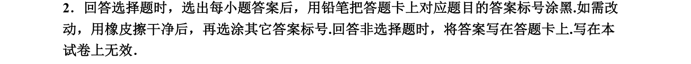
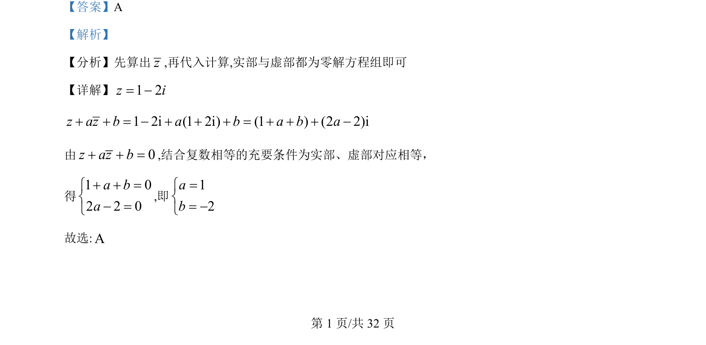

考点：复数运算 共轭复数 复数相等

本题通过已知复数及其共轭，利用复数相等条件求解实参数

📄 原 PDF 第 1 页：
素材/真题/吉林/2008-2024·（吉林）数学高考真题/2022年高考数学试卷（理）（全国乙卷）（解析卷）.pdf
【答案】A 【解析】 【分析】先算出z,再代入计算,实部与虚部都为零解方程组即可 【详解】1 2z i= -1 2i (1 2i) (1 ) (2 2)iz az b a b a b a+ + = - + + + = + + + - 由 0z az b+ + =,结合复数相等的充要条件为实部、虚部对应相等， 得 1 02 2 0a ba+ + =ìí- =î ,即 12ab=ìí= -î 故选:A